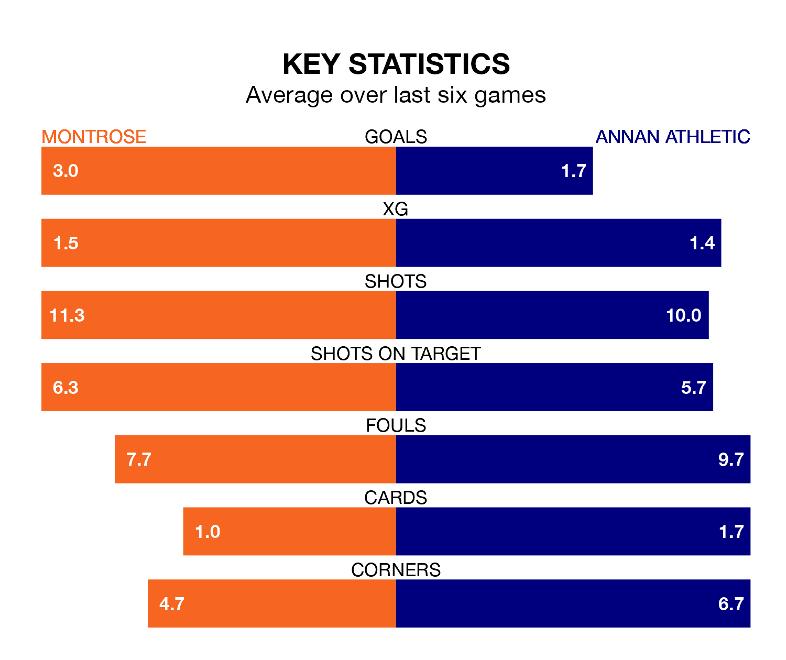

Struggling Annan Athletic face Montrose away at Links Park on Saturday looking to build on a win in their last league outing.
After securing all three points with a 2-1 victory over Queen of the South on March 9, the Galabankies sit ninth in League One.
They travel to play a Montrose side third in the standings, who also won their last match, 4-1 against Cove Rangers.
With 50 goals in 28 games so far this season, Montrose are the league's third-highest scorers with 1.8 goals per game. And they are conceding fewer than average, letting in 43 goals at a rate of 1.5 per game.
Annan, meanwhile, are below average scorers, with 1.4 goals per game, compared to a league average of 1.6. They have conceded 1.9 goals per game.
In the last 10 years, Montrose and Annan have played each other on 20 occasions. Montrose won eight of them, Annan five, and they drew seven times.
On average, the Gable Endies scored 1.8 goals and the Galabankies 1.9 in those matches.
Their last meeting was on January 6, when they played out a 2-2 draw.
The Gable Endies are in fantastic form in League One, with five wins and one loss from their last six games.
With three wins and a draw over that period, Athletic's form is worse – they have taken 10 points from 18, compared to the home side's 15.
In Thomas Goss, the Galabankies have one of the league's most on-form strikers so far this season. He has notched nine goals in 24 appearances, to sit fifth in the scoring charts.
Montrose's top scorers, with nine goals each, are Kane Hester and Graham Webster.
Updated: 15:10 (UTC), 15/03/24